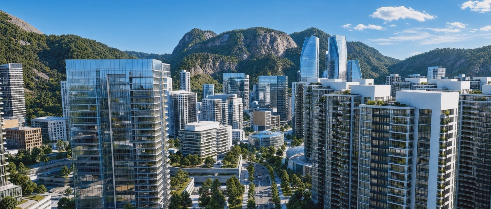
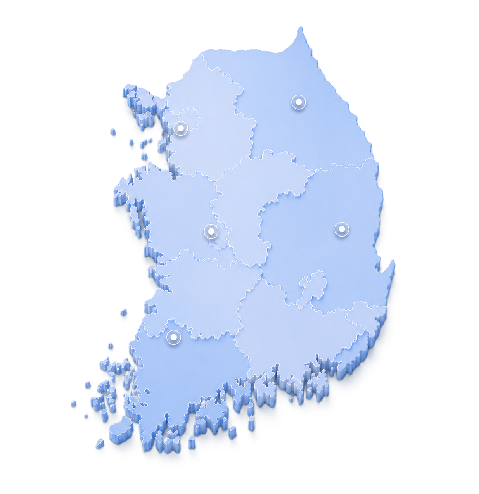
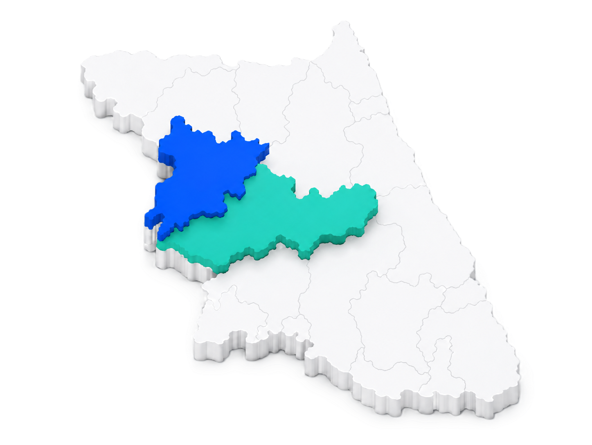

01BUSINESS · 사업소개
사업개요
OVERVIEW사업 개요
국토교통부 주관의 민간기업 중심 도시개발 사업
총 사업비 약 1.1조원의 대규모 국가도시개발 프로젝트
| 구분 | 내용 |
|---|---|
| 사업명 | 춘천 기업혁신파크 선도사업 |
| 위치 | 강원특별자치도 춘천시 남산면 광판리 산68번지 일원 |
| 면적 | 3,632,899㎡1,098,952평 · 여의도 면적의 약 1.25배 |
| 법적 근거 | 「기업도시개발특별법」에 따른 기업도시개발사업기업혁신파크 |
| 시행 주체 | PFV바이오테크이노밸리피에프브이㈜ 명목회사 AMC바이오테크이노밸리자산관리㈜ 자산관리업무 수탁자 |
| 사업비 | 약 1.1조원 |
| 사업 기간 | 2024년 ~ 2033년 |
| 도입 시설 | 첨단지식산업시설(IT, BT, AI, 데이터 등) / 연구시설 / 산업업무시설 주거시설(공동주택, 과학자마을 등) / 교육시설 / 숙박관광휴양시설 |


NATIONAL STRATEGY특화단지 지정
정부가 보증하고 전폭적으로 지원하는 범국가적 프로젝트로
2025년 바이오 분야 국가첨단전략산업 특화단지 지정
바이오분야
국가첨단전략산업
특화단지

강원(춘천 · 홍천)AI기반 신약개발 및 중소형 CDMO
인천 · 경기 시흥세계1위 바이오 메가 클러스터
대전(유성)혁신 신약 오픈 이노베이션 거점
경북(안동 · 포항)국가 백신거점, 글로벌 백신허브
전남(화순)국가 백신 거점, 글로벌 백신 허브

춘천(예방 · 진단)기업혁신파크, 강원대학교, 거두농공단지 등
홍천(항체)홍천 국가항체클러스터, 북방농공단지
※ 상기 계획(안)은 국토교통부 통합개발계획 접수(안) 기준으로 작성된 것으로, 추후 사업 주체 또는 관계 기관 사정, 인허가 과정 등에 따라 변경될 수 있습니다.